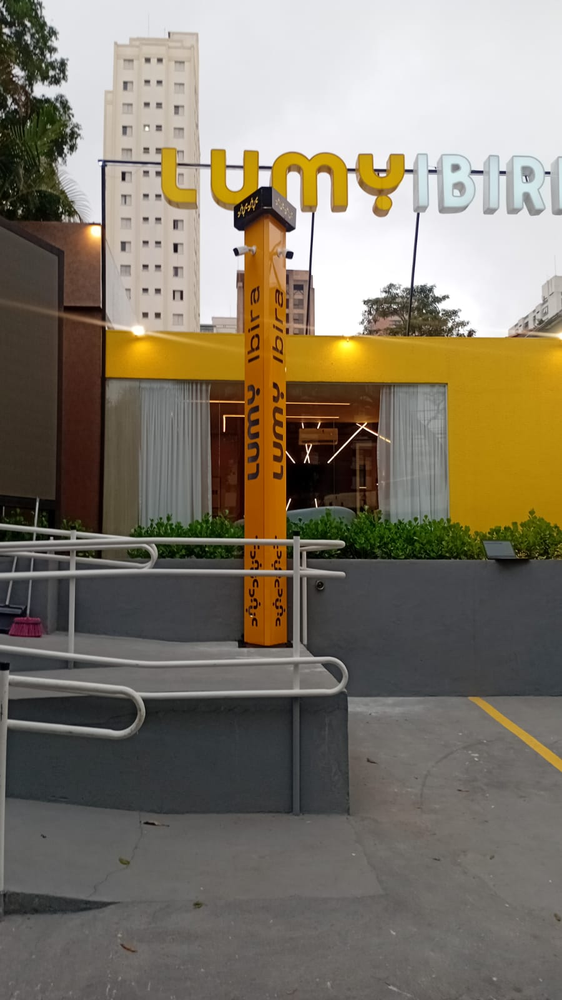
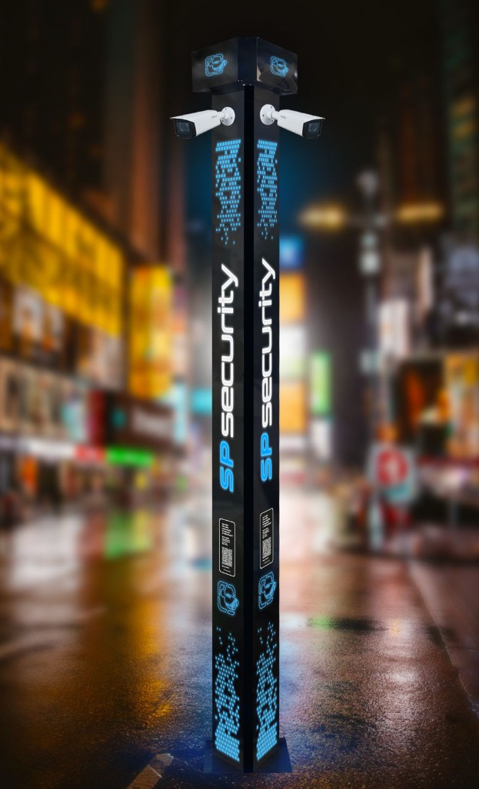
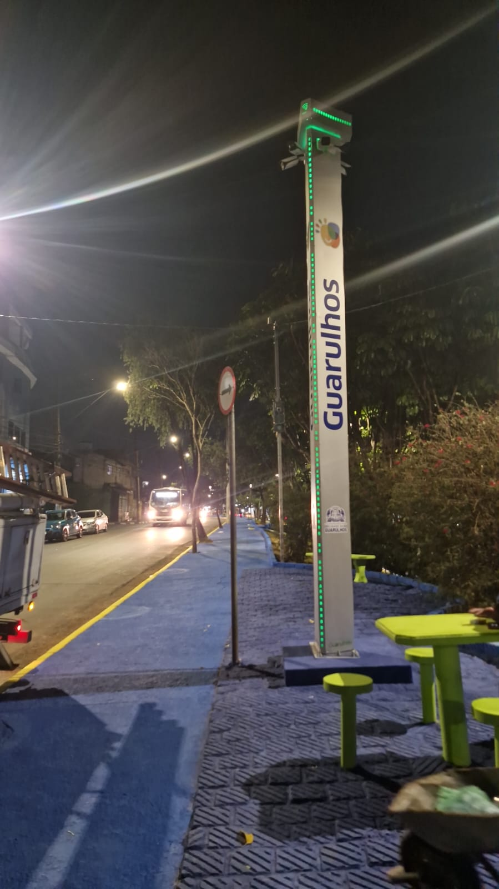
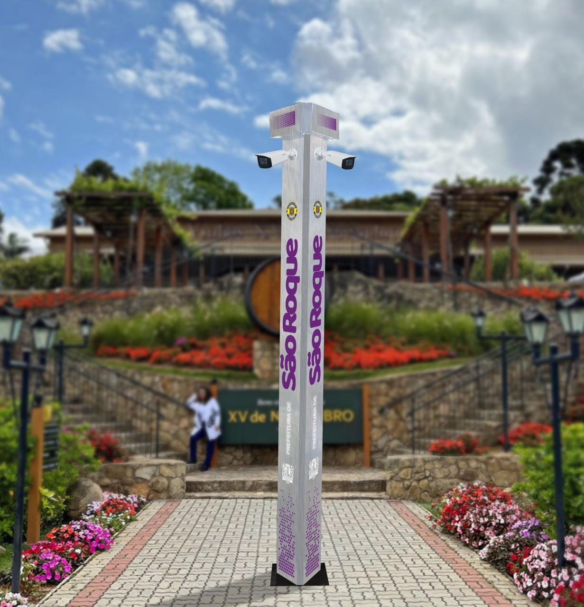
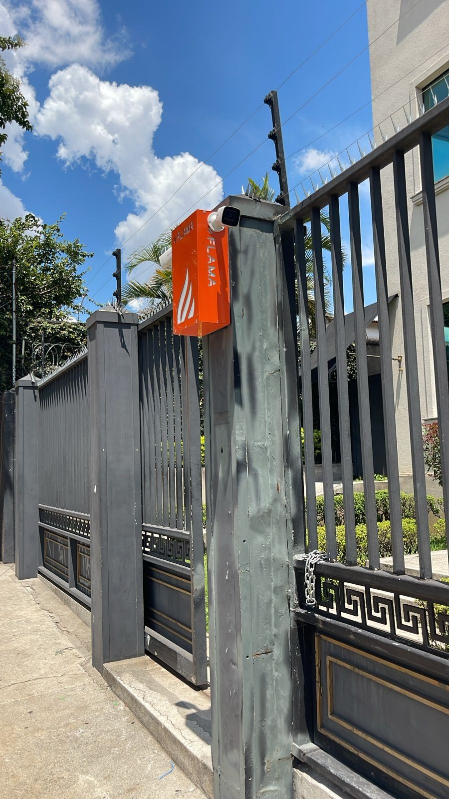
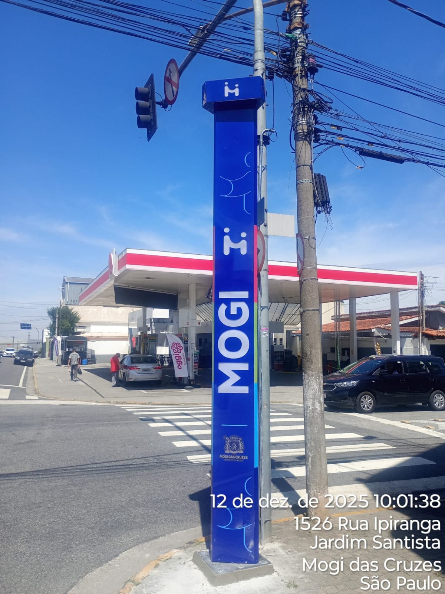
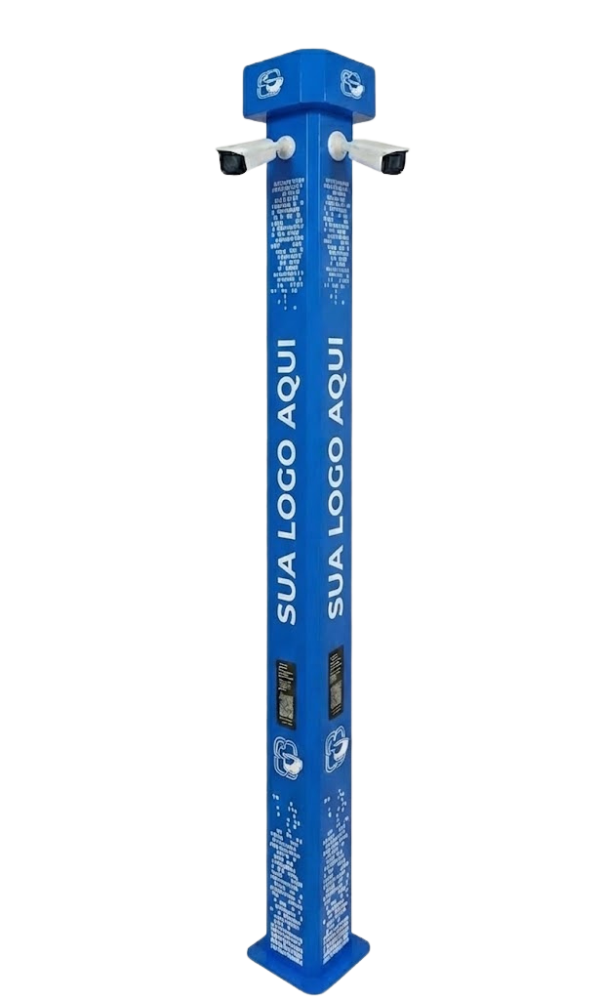

Diagnóstico e projeto de segurança
Mapeamos ambiente, fluxos, ativos e pontos de exposição para orientar uma estratégia coerente com o risco e a operação.
Integramos CFTV, controle de acesso, alarmes e monitoramento para ampliar visibilidade, controle e resposta em ambientes críticos.
Ambientes sem visão integrada dificultam a prevenção, reduzem o controle sobre áreas críticas e tornam a resposta menos coordenada.
Entradas e saídas sem controle consistente aumentam a exposição de pessoas, ativos e áreas restritas.
Áreas sem cobertura adequada reduzem a visibilidade sobre movimentações e situações relevantes.
Recursos isolados fragmentam informações e dificultam uma leitura coordenada do ambiente protegido.
Sem informações organizadas, a avaliação de ocorrências pode levar mais tempo e depender de ações dispersas.
Limites mal monitorados facilitam aproximações e acessos sem identificação antecipada.
A falta de uma visão central dificulta acompanhar áreas críticas e priorizar ações de prevenção.
O problema raramente está em um único ponto. Está na falta de integração entre prevenção, controle, monitoramento e resposta.
Ver como estruturamos a proteçãoCombinamos prevenção, controle e monitoramento para estruturar uma operação de segurança mais conectada à realidade de cada ambiente.
Ajuda a filtrar eventos relevantes e amplia a percepção sobre comportamentos fora do padrão.
Aplicação: áreas críticas e fluxos de movimentação.Reduz pontos cegos e fornece apoio visual para acompanhar ambientes e revisar ocorrências.
Aplicação: acessos, áreas comuns e perímetros.Apoiam a identificação antecipada de violações e movimentações em limites protegidos.
Aplicação: muros, cercas, depósitos e áreas restritas.Fortalece a gestão de entradas, saídas e permissões em pontos com circulação controlada.
Aplicação: portarias, recepções e áreas internas.Ajuda a restringir acessos indevidos e torna o controle de portas mais consistente.
Aplicação: salas técnicas, estoques e acessos restritos.Amplia a presença visível da segurança e concentra recursos em pontos estratégicos.
Aplicação: condomínios, vias internas e espaços abertos.Amplia a visibilidade sobre áreas protegidas e apoia decisões diante de eventos relevantes.
Aplicação: empresas, condomínios e operações.Organiza sinais de diferentes pontos para apoiar uma avaliação mais rápida e contextualizada.
Aplicação: ambientes com múltiplas áreas de controle.Conecta recursos de segurança para reduzir informações dispersas e fortalecer a visão operacional.
Aplicação: projetos com tecnologias complementares.A solução não está em acumular equipamentos. Está em definir como cada recurso contribui para prevenir, controlar, monitorar e responder.
Solicitar análise de segurançaNosso trabalho começa pelo entendimento do ambiente. A partir disso, definimos como tecnologias e procedimentos podem atuar de forma integrada.
Conversamos sobre prioridades, rotina, pontos de atenção e objetivos de proteção.
Avaliamos acessos, fluxos, áreas críticas e vulnerabilidades relevantes para o projeto.
Selecionamos os recursos que melhor apoiam prevenção, controle e monitoramento.
Organizamos a instalação e a conexão dos recursos conforme o projeto definido.
Apresentamos o funcionamento da solução e os cuidados necessários para sua operação.
Avaliamos necessidades de ajuste, suporte ou evolução conforme o ambiente se transforma.
O processo é simples porque a decisão precisa ser clara. Cada etapa ajuda a transformar necessidades reais em uma estrutura de segurança coerente com a operação.
Conversar sobre o seu cenárioProjetos realizados em diferentes contextos, com soluções aplicadas para ampliar controle, visibilidade e prevenção.






Cada projeto combina posicionamento estratégico, tecnologia e integração para apoiar prevenção, controle e resposta.
Registros institucionais das soluções aplicadas à segurança patrimonial, sem reprodução automática.
Observe presença, visibilidade e apoio ao monitoramento.Registro visual para observar a presença do equipamento e sua inserção no ambiente.
Conteúdo institucional que destaca identificação visual e presença em condições de baixa luz.
Uma visão contextual do equipamento e de como ele pode compor uma estrutura de segurança.
Demonstração institucional sobre o uso de imagens para ampliar visibilidade e apoiar a análise do ambiente.
A aplicação adequada depende do ambiente, dos riscos e da operação que precisa ser protegida.
O totem é uma das soluções que podem compor o ecossistema de segurança da SpSecurity. Use as opções para simular possibilidades de aplicação.
A definição final deve considerar ambiente, risco, operação e necessidade de monitoramento.
Carregando...
A configuração visual é uma referência inicial e deve ser validada conforme o ambiente de instalação.
Selecione uma opção para atualizar o preview e comparar possibilidades visuais.
Todas as opções atuais foram preservadas. Selecione uma para aplicar ao preview.
Salve a referência para consultar depois ou envie a configuração para validação comercial.
Solicite um orçamento personalizado e descubra a melhor solução de segurança para sua necessidade.
Explore exemplos de aplicação e veja como diferentes ambientes podem combinar monitoramento, controle de acesso, prevenção e resposta.